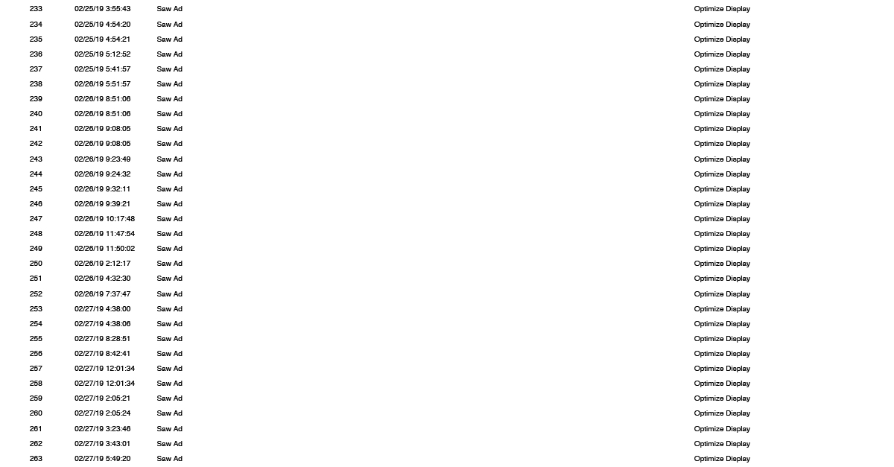

In blogs past, we have written a great deal about the importance of being there for your customers … leading them, driving them, sticking with them as they make their way all the way down their path to conversion.
While we have supplied a lot of content that extols the virtues of our attribution tracking and the digital marketing statistics it provides, we know that it can be challenging to comprehend the entire value of our system; especially if you haven’t seen it in action.
This report is for an automobile dealership. Because someone met the indicators for a prospective client, we started getting in front of him. For the first 27 days of February, we pelted this car shopper every day with multiple ads.
Take note of the fact that if your digital marketing plan is such that you’re paying on a “cost-per-click” basis, you’ll see that you’re hitting this prospect for three months straight – for free, to finally get him to buy. And this is just one guy, so if you’re doing this to millions of people, you can imagine how much easier it is to build your own economy of the people.
According to Jeremy Hudgens, Genius Monkey’s CRO and Director of Client Solutions, “It’s part of our philosophy to build your own economy. Don’t Get caught in the ups and downs of the world economy. Build your own now, because if you have a big enough following, you won’t be affected by the those zig-zags of a regular economy.”
We know that a picture is worth a thousand words, so let’s take a look at a couple of examples of actual client-reports; one that takes a long time, and one that’s rather quick. So as not to betray any confidentiality, we have removed the names of the clients, but you can still see the magic of sticking to the plan … all the way to the conversion.
Our first example is a car dealership. This is showing that we took a single conversion, which was a contact form Thank-You page (as the client wanted to know everyone who filled this out). This “contact” is a form the customer fills out to ask for a salesperson to contact them about a particular vehicle. It is the conversion that we were seeking.
So, you’ll see that on this date and time, this particular conversion was recorded from this IP address, and it was a “first” and “last” conversion. Meaning, we were the first ones to bring them to their website, and we were the last ones to bring them in before they converted.
Now, what’s so cool here, is that you can see the date and time, every day, starting in February, they saw an optimized display ad. And that just goes down the line. Saw an ad, saw an ad, etc.

On February 27th, three weeks after they saw the first ad, they clicked an ad (not ours). It was a Facebook ad that the dealership was running, not us. So they got branded like crazy for a month, and then all of a sudden they see an ad on Facebook and they click it. But we were the first ones to make them aware of the company.
The next thing that happened is that they viewed the Vehicle Description Page (VDP) with parameters, so they basically looked at different vehicles, and that’s the first conversion because that was one of the Key Performance Indicator (KPI) … that they look at a specific Vehicle Description Page (VDP).
They evidently left the website and then clicked another ad, into another vehicle. You will see that it even has the VIN and everything for the specific vehicle they looked at.
The next one is another conversion; they basically went to another VDP that they had originated from the Facebook page. They had an ad in social and it was a dynamic Facebook ad. They are showing multiple clicks from Facebook, which indicates that they’re clicking on different vehicles from Facebook. What’s great about this is that it shows that Facebook did its job. That campaign did its job … we’re not taking anything away from it, but they saw OUR Genius Monkey ad three weeks before they finally decided to click something.
So then they clicked another ad from Facebook, they looked at a parameter, and then a few seconds later they’re looking at the same vehicle with the same VIN. Then they converted from the same Facebook ad, so this indicates that they keep clicking different ones from the same dynamic ad (dynamic meaning they had set it up to where it would show different ads based upon what the person is looking for).
So, after all that, BOOM, he leaves. So, Genius Monkey says, “Slow down cowboy, you need to see more!” So we start showing this guy ads, because he didn’t do what we wanted him to do. He LOOKED at vehicle pages, which is great, but he didn’t do anything more. He left! So, we showed him an optimized display ad (banner ad) for two days.

Then, BOOM, they went back to Facebook and clicked a Facebook ad on February 28th … They converted by going to another Facebook page, and then left again!
So we see that Mr Car Shopper is still clicking in, but now he’s looking at a Jeep Wrangler! Then he took off again. Genius Monkey said, “Okay now, hold tight, Mr Buyer-To-Be … we’re not done with you yet!” So, we started showing him ads again.
So from 2-28 all the way to March 15th, he FINALLY clicked one of our ads. You can see it: Source, Genius Monkey, Ram Truck, went to site and left. We continued pelting him with ads, until 3/21.
Now, what happens here is a beautiful thing:
You see how they browsed the dealership’s website? How did they get there? They just showed up … they went directly to the website. Why? Because they saw all these ads and had been to the site. This time they didn’t need to be guided, they just went to the site on their own.
Now, take a look and you can see WHY they’re there on their own:
He went to the home page, the next one down says he went to New Cars and then he went to inventory and looked at a certain model, the RAM 2500. He then he converts by viewing New Inventory, then he browsed. He looked at New Cars, then kept going down and converted by looking at another model, a RAM 1500, so this tells a story.
He’s looking at a bigger truck, then a smaller truck, with that VIN. This was considered a conversion because he looked at a VDP. Then he hit Vehicle Details, so that was a KPI conversion, then he did it again.
Next, he went and hit View All New Inventory. He is looking at different VINs (Vehicle Identification Numbers), so they are different vehicles, probably different colors, prices, etc.
He then browsed again and landed at that RAM 1500, went to a different VIN, viewed the VDP and then, after looking at several vehicles, he left!
Genius Monkey said, “Hold on, Mr Motorhead, get back here, we’re still working on getting you a new vehicle! We started to show him ads on 3-21, one after the other, all the way through 3-26, so all five days we’re pelting him with a bunch of ads. So what does he do? He didn’t click on the ad, but he does go directly to the site!
Then he goes to different pages on the site and does all these little micro-conversions, KPIs, checking out different VINs, all within 16 minutes. He even looked at pre-owned vehicles, so he’s obviously shopping this deal very aggressively. Then, what does he do? That’s right, he splits … again!
Genius Monkey says, “Hey, where do you think you’re going, Mr Truck Teaser, you get back here right now.” We start showing him ads on 3-27, then 3-28, all the way to 4-14. And just like that, we’re in April!
This may seem like a whole lot of ads, but the only one our client paid for was the one that was clicked on! In fact, while hard to fathom, all of this interaction and tracking has cost the business less than .80, so far. That’s because we deal on a cost-per-click (CPC) basis.
We are now into April 14th before they clicked another one of our ads again, so now they are into us for about a dollar and a half. And, he clicked right into the vehicle. He browsed some more pages and then, you guessed it, he left again.
So then Genius Monkey says, I don’t think so, Captain America. So we start hitting him again with ads, all the way to May 23rd, he goes to his search engine and does a search using the name of the Chrysler dealer as a keyword. He then went to the website. He looked at Financing, Vehicle specials, then All New Inventory. In fact, this time he’s looking at Dodge RAM 3500s. He then goes to the Specials page again. And then, once again, he left.
Genius Monkey said, “Slow down, Mr Fast and Furious, you’ve got a car to buy, you can’t just keep looking at our inventory for free!!! So, all the way to 5-29 he went directly to the site because he had saved a vehicle he was looking at – and went directly to it, indicating that he’d bookmarked it. Only, NOW it’s a jeep!
This is the problem with so many auto-sales mentalities. Dealers see that he’s been looking at Dodge RAM 3500s, so they think that they must inundate them with Dodge 3500 ads. But, he’s been looking at RAM 2500s, RAM 1500s and Jeep Wranglers, too. Like Genius Monkey has always preached, “Let the customer decide what he wants to buy on HIS time, just stay on top of him with relevant ads and branding.
You will soon see just how the tenacity pays off.
He leaves, sees two more ads, comes back … directly to the website, but look what he looks at now … a 2013 used Ford Explorer -- what? So this guy’s all over the page! He saw an ad, boom boom, he leaves, then sees an ad in June. He comes to the website and begins to browse, establishes his price max, which was at 9,999. He’s obviously looking to spend less than $10,000.
He keeps browsing all these pages, looking at inventory. It’s all on the same day, but he spends over and hour just browsing different vehicles. He started browsing at 1:23, then took a break and came back at 3:12 and browsed more cars. He finally left at about 7:34 pm. He then leaves.
Genius Monkey said, “Oh I don’t think so, Jalopy Junkie”. You need to get back here and buy. You can’t just look at all this pretty inventory. That was on 6-19, then he went to a social ad and clicked it, and looked at more inventory.
On 6-18, after looking at a bunch of vehicles, he FINALLY filled out the contact form, saying that he’s interested in that vehicle, and to have someone call him. That’s the biggie … that was our goal … to get him to fill out a form to have a salesman call him. Those are the actual conversions that we’re trying to track. The rest of them are just key performance indicators (KPIs).
This entire journey, as you can see, led up to the final conversion. And why? Because Genius Monkey not only has the technology to attribute and track, but we also have the tenacity to stay in front of the prospective shopper until they convert. It’s not always quick, but it’s the “stick-to-it-iveness” that wins in the end.
What this real example shows is that sometimes it takes the whole five months to get them there. They may be just looking, or maybe his lease was coming up and he’s just deciding what his next move will be. In fact, that may be the very reason why we targeted him in the first place.
With the auto industry, as you just learned, when you want a sales person to contact you, you’re pretty much ready to buy. That’s because you are voluntarily subjecting yourself to being bombarded by a salesperson. On this next type of service, people are just saying that they want to know more.
Let’s take a look at another quick (and to-the-point) example of a path to conversion. This one is for an educational institution, which didn’t take near as long:
On June 6th around noon, our target saw one of our Genius Monkey display ads and began to browse the site.
Just minutes later, she converted by filling out the Thank You Page
What you have just seen is an example of two very different scenarios, but with the same goal for both. People don’t usually just walk into a dealership and buy a car … it can be a long, drawn out process. Although, it can be short and sweet, too.
So, to summarize, when we are asked how many impressions it takes to get a conversion, we will always say, “AS MANY AS IT TAKES!”